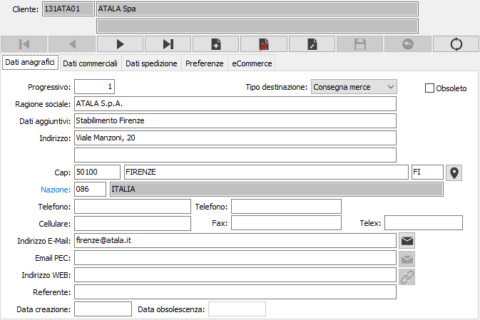
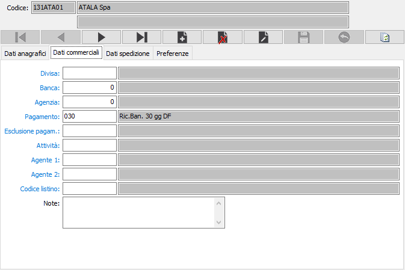
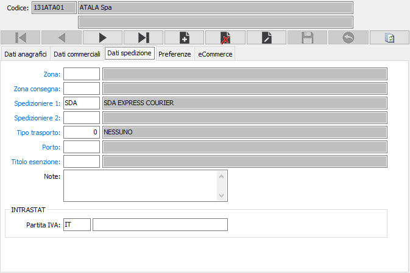
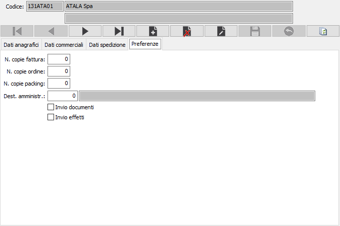

Il pulsante consente di ricercare le coordinate geografiche
dell'indirizzo completo della destinazione; è necessaria una connessione
internet e viene aperto il browser web utilizzando Google Maps.
Il pulsante consente di ricercare le coordinate geografiche
dell'indirizzo completo della destinazione; è necessaria una connessione
internet e viene aperto il browser web utilizzando Google Maps.Destinazioni
Alla procedura si può accedere premendo il bottone Manutenzione della linguetta Destinazioni dell’anagrafica clienti oppure il bottone Manutenzione della linguetta Provenienze dell’anagrafica fornitori.
Il programma consente di mantenere le ulteriori destinazioni di consegna merci o destinazioni amministrative relative a ciascun cliente, nonché le eventuali condizioni di fornitura, i dati di spedizione e le preferenze, se diverse da quelle memorizzate nell’anagrafica del cliente e relative al domicilio principale.
Merita attenzione, in questa sede, la possibilità di definire condizioni di pagamento e banche d’appoggio diverse da quelle standard del cliente e da applicarsi in caso di consegna merci alla destinazione diversa in esame.
La tabella consente di memorizzare i vari indirizzi di consegna dei clienti e dei fornitori, nel caso in cui gli stessi non corrispondano all'indirizzo riportato nella corrispondente anagrafica. Per ciascun cliente o fornitore è possibile memorizzare una o più destinazioni diverse, che potranno poi essere selezionate ed acquisite durante l'emissione dei documenti.
Nel caso di provenienze relative ai fornitori, non sono visibili alcuni campi validi solo per i clienti.
In presenza del modulo eCommerce sarà visibile un ulteriore sezione, solo per i clienti, dove vengono definite quali sono le modalità di pagamento consentite per la destinazione attiva; da questa sezione è possibile inserire o cancellare i pagamenti attivi per la destinazione.
Linguetta dati anagrafici

CODICE CLIENTE / FORNITORE: campo alfanumerico di 8 caratteri presente in anagrafica per indicare il cliente / fornitore cui si riferisce la destinazione in esame. Sul campo sono attive le funzioni di ricerca e di manutenzione della tabella.
PROGRESSIVO: numero progressivo di destinazione diversa riferito al cliente / fornitore di cui al campo precedente. È gestito automaticamente dal programma. Sul campo sono attive le funzioni di ricerca sulla tabella stessa.
TIPO DESTINAZIONE: indica la tipologia della destinazione: consegna merce, sede legale, sede amministrativa, presentazione effetti.
RAGIONE SOCIALE: descrivere la ragione sociale della destinazione diversa.
DATI AGGIUNTIVI: descrivere gli eventuali dati aggiuntivi della destinazione diversa.
INDIRIZZO: descrivere l'indirizzo della destinazione diversa.
C.A.P.: descrivere il codice di avviamento postale della destinazione diversa.
CITTÀ: descrivere la città della destinazione diversa.
PROVINCIA: descrivere la provincia della destinazione diversa.
Il pulsante consente di ricercare le coordinate geografiche
dell'indirizzo completo della destinazione; è necessaria una connessione
internet e viene aperto il browser web utilizzando Google Maps.
CODICE NAZIONE: codice della nazione di appartenenza. Sul campo sono attive le funzioni di ricerca e di manutenzione della tabella.
TELEFONO 1 e 2: campi alfanumerico di 25 caratteri per descrivere un numero telefonico
CELLULARE: campo alfanumerico di 25 caratteri per descrivere un numero telefonico
FAX: campo alfanumerico di 25 caratteri per descrivere un numero di fax
TELEX: campo alfanumerico di 25 caratteri per descrivere un numero di telex
INDIRIZZO E-MAIL: campo alfanumerico di 80 caratteri per descrivere un indirizzo e-mail. L’informazione può essere utilizzata da alcuni programmi per l’inoltro di documenti tramite posta elettronica.
EMAIL PEC: campo alfanumerico di 80 caratteri per descrivere un indirizzo e-mail PEC.

 Il
pulsante consente di inviare una email all'indirizzo email o email PEC;
si apre una finestra dove viene precompilato l'indirizzo del destinatario
ed è possibile indicare un destinatario per conoscenza, l'oggetto, il
testo del messaggio ed eventualmente la richiesta di conferma di lettura;
è presente anche un pulsante Allegati che consente di aggiungere allegati
di qualsiasi tipo.
Il
pulsante consente di inviare una email all'indirizzo email o email PEC;
si apre una finestra dove viene precompilato l'indirizzo del destinatario
ed è possibile indicare un destinatario per conoscenza, l'oggetto, il
testo del messaggio ed eventualmente la richiesta di conferma di lettura;
è presente anche un pulsante Allegati che consente di aggiungere allegati
di qualsiasi tipo.
INDIRIZZO WEB: campo alfanumerico di 50 caratteri per descrivere un indirizzo http.
 Il pulsante consente di richiamare
automaticamente il sito Web indicato; alla pressione del bottone si avvia
il browser predefinito.
Il pulsante consente di richiamare
automaticamente il sito Web indicato; alla pressione del bottone si avvia
il browser predefinito.
REFERENTE: campo alfanumerico di 50 caratteri per descrivere il nome di un referente aziendale.
Linguetta dati commerciali

CODICE DIVISA: codice alfanumerico di 3 caratteri presente in tabella Divise per indicare la divisa con la quale viene trattato la destinazione diversa. Viene proposto automaticamente in fase di emissione documenti. Sul campo sono attive le funzioni di ricerca e di manutenzione della tabella.
BANCA: inserire il codice della banca di appoggio della destinazione diversa. Tale codice verrà proposto automaticamente in fase di emissione documenti. Sul campo sono attive le funzioni di ricerca e di manutenzione della tabella.
AGENZIA: inserire il codice dell'agenzia della banca di appoggio della destinazione diversa. Tale codice verrà proposto automaticamente in fase di emissione documenti. Sul campo sono attive le funzioni di ricerca e di manutenzione della tabella.
PAGAMENTO: inserire il codice del pagamento utilizzato dalla destinazione diversa, che verrà proposto automaticamente in fase di emissione documenti. Sul campo sono attive le funzioni di ricerca e di manutenzione della tabella.
ESCLUSIONE PAGAMENTO: inserire, se necessario, il codice del tipo di esclusione accordata per i pagamenti alla destinazione diversa. Sul campo sono attive le funzioni di ricerca e di manutenzione della tabella.
CODICE ATTIVITÀ: inserire il codice dell'attività della destinazione diversa. Sul campo sono attive le funzioni di ricerca e di manutenzione della tabella.
CODICE AGENTE 1: inserire il codice dell'agente che cura la destinazione diversa. Tale codice verrà proposto automaticamente in fase di emissione documenti. Sul campo sono attive le funzioni di ricerca e di manutenzione della tabella.
CODICE AGENTE 2: inserire il codice dell’eventuale secondo agente che segue la destinazione diversa. Tale codice verrà proposto automaticamente in fase di emissione documenti. Sul campo sono attive le funzioni di ricerca e di manutenzione della tabella.
CODICE LISTINO: inserire l'eventuale il codice del listino della destinazione diversa. Tale codice verrà proposto automaticamente in fase di emissione documenti. Sul campo sono attive le funzioni di ricerca e di manutenzione della tabella.
NOTE: campo note per descrivere annotazioni di tipo commerciale.
Linguetta dati spedizione

ZONA: codice alfanumerico di 3 caratteri, presente nella tabella Zone, per definire la zona di ubicazione della destinazione diversa utile a fini statistici. Sul campo sono attive le funzioni di ricerca e di manutenzione della tabella.
ZONA CONSEGNA: codice alfanumerico di 3 caratteri, presente nella tabella Zone consegna, per definire la zona di consegna della destinazione diversa, utile a fini di organizzazione delle consegne. Sul campo sono attive le funzioni di ricerca e di manutenzione della tabella.
SPEDIZIONIERE 1: eventuale codice alfanumerico di 3 caratteri, presente nella tabella Spedizionieri, per definire lo spedizioniere richiesto o definito per la destinazione diversa. Viene proposto in sede di emissione documenti di trasporto. Sul campo sono attive le funzioni di ricerca e di manutenzione della tabella.
SPEDIZIONIERE 2: eventuale codice alfanumerico di 3 caratteri, presente nella tabella Spedizionieri, per definire il secondo spedizioniere richiesto o definito per la destinazione diversa. Viene proposto in sede di emissione documenti di trasporto. Sul campo sono attive le funzioni di ricerca e di manutenzione della tabella.
TIPO TRASPORTO: codice numerico di 3 caratteri, presente nella tabella Tipi trasporto, per memorizzare le modalità di trasporto concordate con la destinazione diversa. Viene proposto in sede di emissione documenti di trasporto. Sul campo sono attive le funzioni di ricerca e di manutenzione della tabella.
PORTO: codice alfanumerico di 3 caratteri, presente nella tabella Porti, per memorizzare le modalità di resa concordate con la destinazione diversa. Viene proposto in sede di emissione documenti di trasporto. Sul campo sono attive le funzioni di ricerca e di manutenzione della tabella.
NOTE. Campo note per inserire annotazioni relative alle modalità di spedizione.
Se presente il modulo INTRA, al fine di gestire correttamente le situazioni in cui la vendita viene effettuata nei confronti di un cliente ExtraCEE ma la consegna merce avviene in un paese facente parte della CEE è necessario generare comunque i dati Intra indicando i riferimenti Iva del cliente destinatario della merce, è stato introdotto l'identificativo Iva (ISO e Partita Iva) da riportare in Intra.
Linguetta preferenze

NUMERO COPIE FATTURA inserire il numero di copie di fatture che si devono stampare per la destinazione diversa.
NUMERO COPIE ORDINE inserire il numero di copie di ordine che si devono stampare per la destinazione diversa.
NUMERO COPIE PACKING: inserire il numero di copie di packing list che si devono stampare per la destinazione diversa.
INVIO DOCUMENTI: definisce, nel caso di fatture raggruppate per destinazione, se la fattura deve essere inviata all'indirizzo della destinazione (casella con segno di spunta).
DESTINAZIONE AMMINISTRATIVA: definisce l'eventuale destinazione amministrativa di default da proporre in fase di emissione documenti. Sul campo è presente la funzione di ricerca (F9) sulla tabella stessa.